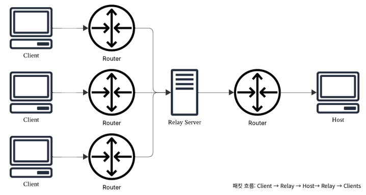

기간:
개발 엔진: Unity
장르:
플랫폼: Windows
인원: 1명
개요:


기간:
개발 엔진: Unity
장르:
플랫폼: Windows
인원: 1명
개요:

Mirror를 사용해 멀티 플레이를 개발 해 내부 IP에서 멀티플레이가 가능하게 되었습니다.
P2P방식에서 외부 IP와 멀티플레이를 하려면 포트포워딩을 해야한다는 것을 알고 시도해 보았지만 실패하여 찾아보던 중 유니티에서 공식적으로 지원하는 Netcode를 알게 되었고 Netcode를 사용해 P2P방식에서 Relay 방식으로 넘어와 개발하게 되었습니다.
서버에서 관리해야 하는 변수들이 클라이언트 따로 서버 따로 적용되는 문제가 있었습니다.
당구공이 튕기지 않고 미끄러지는 문제가 발생했습니다.
서버와 클라이언트에 당구공의 위치가 다르게 나오는 문제가 있었습니다.
처음엔 클라이언트에서도 동일하게 변수를 수정하려고 하였지만 Netcode에 NetworkVariable을 사용해 서버에서 관리하는게 편리하다는 것을 알게 되었고 RPC 함수를 만들어 서버에서 수정할 수 있게 하여 문제를 해결하였습니다.
Physic Material을 사용해 문제를 해결하려고 하였지만 어떻게 하여도 실제와 너무 다르게 튕기지 않는 문제가 있었습니다. 실제 당구공이 당구대에서 어떻게 움직이는지 알아보고 코드로 당구공의 움직임을 제어해 문제를 해결하였습니다.
NetworkObject를 사용해 서버와 클라이언트 당구공의 위치를 동기화 하였습니다.